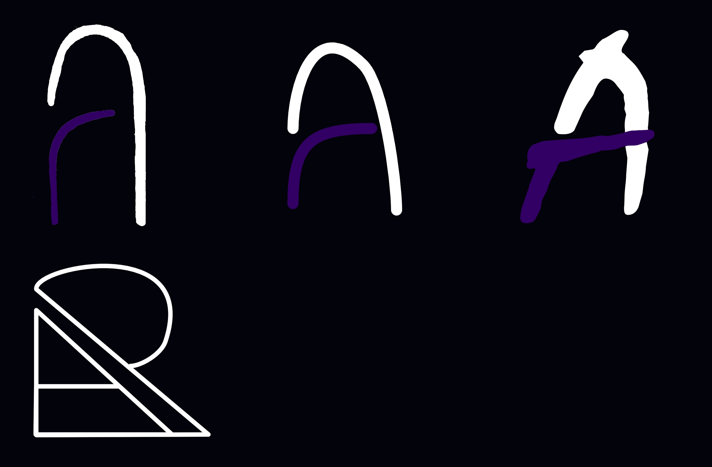
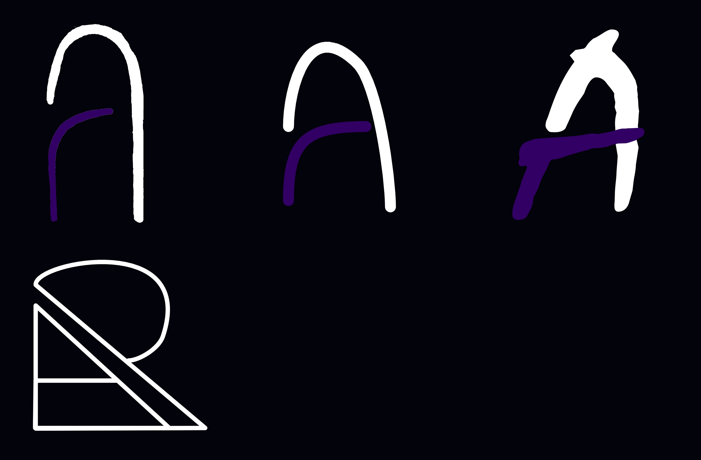

Personal Rebrand (2021)
Towards the end of University, I knew I would finish and then want to join the workforce within web development, however, my online image was not as i wanted. When i made my website back in
2017/18, i wanted something that depersonalised me and made it seem like a business providing a service, Website design and development, however, now i feel that the site does not represent me or what I am, on top of looking
severely.
I started by thinking of design ideas for the UX. I knew I wanted a mostly single page site where most information could be found, with tiny pages off for historic data.
 These were the intial designs for the homepage of the system, while i mostly stuck to the plan that is shown here, some addaptions were made when applied to better first the web space,
either from changing layouts, or adapting the design to fit a mobile experience.
These were the intial designs for the homepage of the system, while i mostly stuck to the plan that is shown here, some addaptions were made when applied to better first the web space,
either from changing layouts, or adapting the design to fit a mobile experience.
Branding
I knew that with the system i wanted to switch back to being about Me, more like a portfolio of my work, achievements and interests over a advertisement of my ability to make websites.
To reflect this I decided to with back to using just my name, and having the branding respond to that. I focused on branding based purely on typography, using the letters "R" and "A".
 On the Right is the initial hand drawn ideas I had for logos for the site. They mostly follow the same design language with small variations. I decided that the top left and top middle were my favourite
options so chose to take them to the next stage and make initial designs in software.

On the Right is the initial hand drawn ideas I had for logos for the site. They mostly follow the same design language with small variations. I decided that the top left and top middle were my favourite
options so chose to take them to the next stage and make initial designs in software.

The colours picked for the site are quite similar to the old site, with the main concept of the dark made being kept and the purple accent colour. The changes made to the background doubled down on the darkness
making it larger of a choice than a confused middle ground, with some slight blue in to stop it being a pure black colour and to give the colour some character.
The rest of the site was simple from that point on with just content being added as and when needed, with conciderations taken to make sure portable devices view the content correctly.
If you want to view the site, simply click the button below:
Vist Project